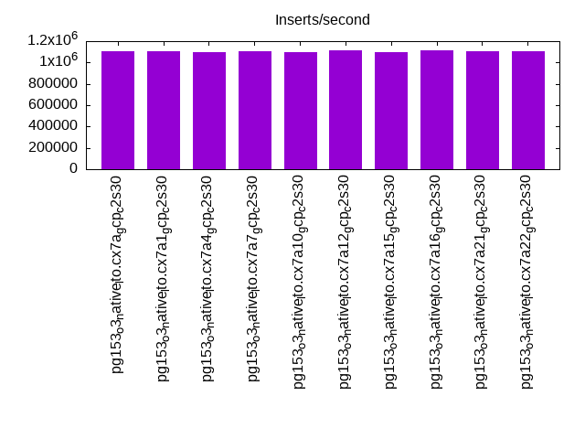
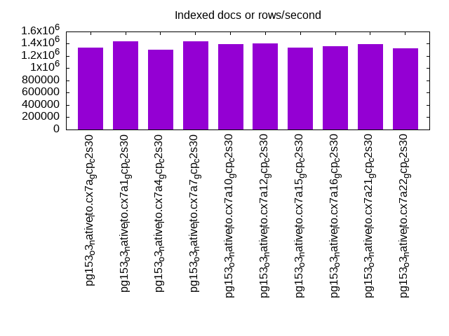
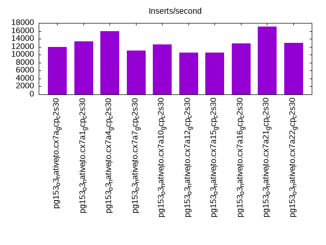
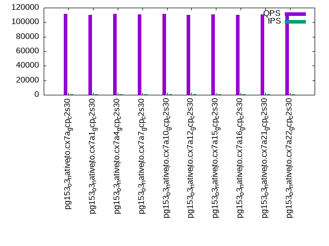
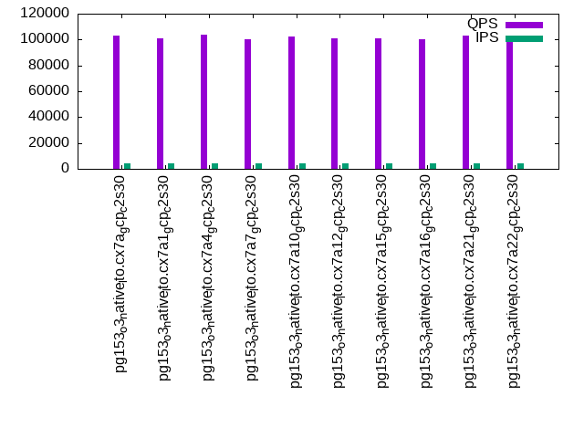
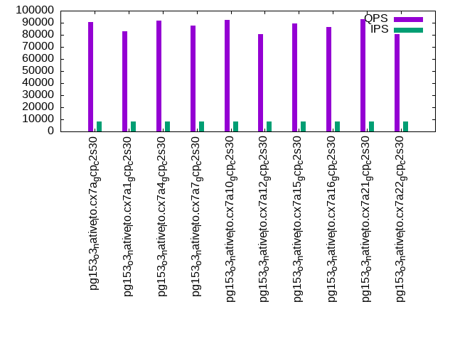

This is a report for the insert benchmark with 4000M docs and 8 client(s). It is generated by scripts (bash, awk, sed) and Tufte might not be impressed. An overview of the insert benchmark is here and a short update is here. Below, by DBMS, I mean DBMS+version.config. An example is my8020.c10b40 where my means MySQL, 8020 is version 8.0.20 and c10b40 is the name for the configuration file.
The test server is a c2-standard-30 with 15 cores, hyperthreads disabled, 120G RAM and XFS with SW RAID 0 across 4 NVMe SSD. The benchmark was run with 8 clients and there were 1 or 3 connections per client (1 for queries or inserts without rate limits, 1+1 for rate limited inserts+deletes). It uses 8 tables, 1 per client. It loads 500M rows per table without secondary indexes, creates secondary indexes, then inserts 20M rows per table with a delete per insert to avoid growing the table. It then does 3 read+write tests for 3600s each that do queries as fast as possible with 100, 500 and then 1000 inserts/second/client concurrent with the queries. There are also deletes to match the inserts and avoid growing the table. The database is larger than memory. Clients and the DBMS share one server. The per-database configs are in the per-database subdirectories here.
The tested DBMS are:
The numbers are inserts/s for l.i0 and l.i1, indexed docs (or rows) /s for l.x and queries/s for q*.2. The values are the average rate over the entire test for inserts (IPS) and queries (QPS). The range of values for IPS and QPS is split into 3 parts: bottom 25%, middle 50%, top 25%. Values in the bottom 25% have a red background, values in the top 25% have a green background and values in the middle have no color. A gray background is used for values that can be ignored because the DBMS did not sustain the target insert rate. Red backgrounds are not used when the minimum value is within 80% of the max value.
| dbms | l.i0 | l.x | l.i1 | q100.1 | q500.1 | q1000.1 |
|---|---|---|---|---|---|---|
| pg153_o3_native_lto.cx7a_gcp_c2s30 | 1102232 | 1335147 | 11947 | 111723 | 103156 | 90694 |
| pg153_o3_native_lto.cx7a1_gcp_c2s30 | 1105889 | 1439921 | 13430 | 110114 | 100699 | 82821 |
| pg153_o3_native_lto.cx7a4_gcp_c2s30 | 1095890 | 1298312 | 15909 | 111620 | 103542 | 91871 |
| pg153_o3_native_lto.cx7a7_gcp_c2s30 | 1103448 | 1439403 | 11054 | 110928 | 100181 | 87861 |
| pg153_o3_native_lto.cx7a10_gcp_c2s30 | 1101322 | 1389889 | 12586 | 111521 | 102652 | 92298 |
| pg153_o3_native_lto.cx7a12_gcp_c2s30 | 1118256 | 1409975 | 10595 | 110339 | 101064 | 80797 |
| pg153_o3_native_lto.cx7a15_gcp_c2s30 | 1098901 | 1332035 | 10479 | 110841 | 101041 | 89143 |
| pg153_o3_native_lto.cx7a16_gcp_c2s30 | 1111111 | 1361504 | 12810 | 110068 | 100490 | 86253 |
| pg153_o3_native_lto.cx7a21_gcp_c2s30 | 1104362 | 1390372 | 17129 | 110845 | 102795 | 92676 |
| pg153_o3_native_lto.cx7a22_gcp_c2s30 | 1105583 | 1321910 | 13004 | 110148 | 101045 | 80552 |
This table has relative throughput, throughput for the DBMS relative to the DBMS in the first line, using the absolute throughput from the previous table. Values less than 0.95 have a yellow background. Values greater than 1.05 have a blue background.
| dbms | l.i0 | l.x | l.i1 | q100.1 | q500.1 | q1000.1 |
|---|---|---|---|---|---|---|
| pg153_o3_native_lto.cx7a_gcp_c2s30 | 1.00 | 1.00 | 1.00 | 1.00 | 1.00 | 1.00 |
| pg153_o3_native_lto.cx7a1_gcp_c2s30 | 1.00 | 1.08 | 1.12 | 0.99 | 0.98 | 0.91 |
| pg153_o3_native_lto.cx7a4_gcp_c2s30 | 0.99 | 0.97 | 1.33 | 1.00 | 1.00 | 1.01 |
| pg153_o3_native_lto.cx7a7_gcp_c2s30 | 1.00 | 1.08 | 0.93 | 0.99 | 0.97 | 0.97 |
| pg153_o3_native_lto.cx7a10_gcp_c2s30 | 1.00 | 1.04 | 1.05 | 1.00 | 1.00 | 1.02 |
| pg153_o3_native_lto.cx7a12_gcp_c2s30 | 1.01 | 1.06 | 0.89 | 0.99 | 0.98 | 0.89 |
| pg153_o3_native_lto.cx7a15_gcp_c2s30 | 1.00 | 1.00 | 0.88 | 0.99 | 0.98 | 0.98 |
| pg153_o3_native_lto.cx7a16_gcp_c2s30 | 1.01 | 1.02 | 1.07 | 0.99 | 0.97 | 0.95 |
| pg153_o3_native_lto.cx7a21_gcp_c2s30 | 1.00 | 1.04 | 1.43 | 0.99 | 1.00 | 1.02 |
| pg153_o3_native_lto.cx7a22_gcp_c2s30 | 1.00 | 0.99 | 1.09 | 0.99 | 0.98 | 0.89 |
This lists the average rate of inserts/s for the tests that do inserts concurrent with queries. For such tests the query rate is listed in the table above. The read+write tests are setup so that the insert rate should match the target rate every second. Cells that are not at least 95% of the target have a red background to indicate a failure to satisfy the target.
| dbms | q100.1 | q500.1 | q1000.1 |
|---|---|---|---|
| pg153_o3_native_lto.cx7a_gcp_c2s30 | 797 | 3988 | 7976 |
| pg153_o3_native_lto.cx7a1_gcp_c2s30 | 797 | 3987 | 7973 |
| pg153_o3_native_lto.cx7a4_gcp_c2s30 | 797 | 3987 | 7976 |
| pg153_o3_native_lto.cx7a7_gcp_c2s30 | 798 | 3987 | 7978 |
| pg153_o3_native_lto.cx7a10_gcp_c2s30 | 797 | 3987 | 7976 |
| pg153_o3_native_lto.cx7a12_gcp_c2s30 | 797 | 3987 | 7976 |
| pg153_o3_native_lto.cx7a15_gcp_c2s30 | 797 | 3987 | 7976 |
| pg153_o3_native_lto.cx7a16_gcp_c2s30 | 797 | 3988 | 7973 |
| pg153_o3_native_lto.cx7a21_gcp_c2s30 | 797 | 3987 | 7976 |
| pg153_o3_native_lto.cx7a22_gcp_c2s30 | 797 | 3987 | 7973 |
| target | 800 | 4000 | 8000 |
l.i0: load without secondary indexes. Graphs for performance per 1-second interval are here.
Average throughput:
Insert response time histogram: each cell has the percentage of responses that take <= the time in the header and max is the max response time in seconds. For the max column values in the top 25% of the range have a red background and in the bottom 25% of the range have a green background. The red background is not used when the min value is within 80% of the max value.
| dbms | 256us | 1ms | 4ms | 16ms | 64ms | 256ms | 1s | 4s | 16s | gt | max |
|---|---|---|---|---|---|---|---|---|---|---|---|
| pg153_o3_native_lto.cx7a_gcp_c2s30 | 97.179 | 2.735 | 0.057 | 0.013 | 0.014 | 0.001 | 0.770 | ||||
| pg153_o3_native_lto.cx7a1_gcp_c2s30 | 97.263 | 2.674 | 0.038 | 0.012 | 0.012 | 0.001 | 0.856 | ||||
| pg153_o3_native_lto.cx7a4_gcp_c2s30 | 96.873 | 3.036 | 0.060 | 0.016 | 0.013 | 0.001 | 0.727 | ||||
| pg153_o3_native_lto.cx7a7_gcp_c2s30 | 96.901 | 3.027 | 0.042 | 0.021 | 0.009 | 0.001 | 0.493 | ||||
| pg153_o3_native_lto.cx7a10_gcp_c2s30 | 97.288 | 2.616 | 0.066 | 0.017 | 0.012 | 0.001 | 0.678 | ||||
| pg153_o3_native_lto.cx7a12_gcp_c2s30 | 97.166 | 2.771 | 0.048 | 0.010 | 0.004 | nonzero | 0.585 | ||||
| pg153_o3_native_lto.cx7a15_gcp_c2s30 | 96.823 | 3.103 | 0.048 | 0.015 | 0.010 | 0.001 | 0.566 | ||||
| pg153_o3_native_lto.cx7a16_gcp_c2s30 | 97.646 | 2.284 | 0.048 | 0.011 | 0.010 | 0.001 | 0.758 | ||||
| pg153_o3_native_lto.cx7a21_gcp_c2s30 | 97.333 | 2.615 | 0.031 | 0.009 | 0.011 | 0.001 | nonzero | 1.007 | |||
| pg153_o3_native_lto.cx7a22_gcp_c2s30 | 97.566 | 2.363 | 0.050 | 0.011 | 0.010 | 0.001 | nonzero | 5.617 |
Performance metrics for the DBMS listed above. Some are normalized by throughput, others are not. Legend for results is here.
ips qps rps rmbps wps wmbps rpq rkbpq wpi wkbpi csps cpups cspq cpupq dbgb1 dbgb2 rss maxop p50 p99 tag 1102232 0 567 4.8 1563.3 306.4 0.001 0.004 0.001 0.285 91674 81.9 0.083 11 382.7 452.8 0.0 0.770 145142 42653 4000m.pg153_o3_native_lto.cx7a_gcp_c2s30 1105889 0 569 4.9 1523.1 281.6 0.001 0.005 0.001 0.261 90062 83.7 0.081 11 382.7 452.8 0.0 0.856 144441 53141 4000m.pg153_o3_native_lto.cx7a1_gcp_c2s30 1095890 0 556 5.3 1568.2 307.3 0.001 0.005 0.001 0.287 90019 82.7 0.082 11 382.7 452.8 0.0 0.727 144135 48169 4000m.pg153_o3_native_lto.cx7a4_gcp_c2s30 1103448 0 563 4.8 1705.3 324.4 0.001 0.004 0.002 0.301 92328 83.4 0.084 11 382.7 398.8 0.0 0.493 143744 62731 4000m.pg153_o3_native_lto.cx7a7_gcp_c2s30 1101322 0 557 5.0 1587.7 303.4 0.001 0.005 0.001 0.282 90605 83.2 0.082 11 382.7 452.8 0.0 0.678 144043 52449 4000m.pg153_o3_native_lto.cx7a10_gcp_c2s30 1118256 0 574 4.5 1536.3 311.5 0.001 0.004 0.001 0.285 90930 84.8 0.081 11 382.7 452.8 0.0 0.585 143598 68425 4000m.pg153_o3_native_lto.cx7a12_gcp_c2s30 1098901 0 561 5.1 1631.5 314.5 0.001 0.005 0.001 0.293 90239 83.6 0.082 11 382.7 414.8 0.0 0.566 143045 58336 4000m.pg153_o3_native_lto.cx7a15_gcp_c2s30 1111111 0 557 4.4 1375.7 266.8 0.001 0.004 0.001 0.246 91091 83.7 0.082 11 382.7 452.8 0.0 0.758 144642 56238 4000m.pg153_o3_native_lto.cx7a16_gcp_c2s30 1104362 0 557 4.4 1344.0 251.1 0.001 0.004 0.001 0.233 91843 83.4 0.083 11 382.7 452.8 0.0 1.007 143143 55639 4000m.pg153_o3_native_lto.cx7a21_gcp_c2s30 1105583 0 556 4.4 1384.3 264.4 0.001 0.004 0.001 0.245 90419 83.9 0.082 11 382.7 452.8 0.0 5.617 143445 55140 4000m.pg153_o3_native_lto.cx7a22_gcp_c2s30
l.x: create secondary indexes.
Average throughput:
Performance metrics for the DBMS listed above. Some are normalized by throughput, others are not. Legend for results is here.
ips qps rps rmbps wps wmbps rpq rkbpq wpi wkbpi csps cpups cspq cpupq dbgb1 dbgb2 rss maxop p50 p99 tag 1335147 0 6304 916.2 1257.1 271.7 0.005 0.703 0.001 0.208 21602 30.9 0.016 3 735.2 802.4 0.1 0.002 NA NA 4000m.pg153_o3_native_lto.cx7a_gcp_c2s30 1439921 0 6253 897.5 1267.7 275.3 0.004 0.638 0.001 0.196 7577 34.3 0.005 4 735.2 801.5 0.1 0.027 NA NA 4000m.pg153_o3_native_lto.cx7a1_gcp_c2s30 1298312 0 6373 917.3 1235.8 267.2 0.005 0.723 0.001 0.211 20638 31.1 0.016 4 735.2 805.2 0.1 0.002 NA NA 4000m.pg153_o3_native_lto.cx7a4_gcp_c2s30 1439403 0 6027 837.0 1361.4 300.5 0.004 0.595 0.001 0.214 23102 33.7 0.016 4 735.2 751.2 0.1 0.002 NA NA 4000m.pg153_o3_native_lto.cx7a7_gcp_c2s30 1389889 0 6446 870.8 1348.4 293.0 0.005 0.642 0.001 0.216 21832 32.9 0.016 4 735.2 803.1 0.0 0.002 NA NA 4000m.pg153_o3_native_lto.cx7a10_gcp_c2s30 1409975 0 6131 867.7 1365.2 295.8 0.004 0.630 0.001 0.215 22239 33.4 0.016 4 735.2 802.6 0.1 0.002 NA NA 4000m.pg153_o3_native_lto.cx7a12_gcp_c2s30 1332035 0 6366 886.1 1281.8 278.6 0.005 0.681 0.001 0.214 20674 31.8 0.016 4 735.2 767.2 0.1 0.030 NA NA 4000m.pg153_o3_native_lto.cx7a15_gcp_c2s30 1361504 0 6022 879.1 1247.1 270.2 0.004 0.661 0.001 0.203 20683 32.3 0.015 4 735.2 801.4 0.1 0.002 NA NA 4000m.pg153_o3_native_lto.cx7a16_gcp_c2s30 1390372 0 6206 904.9 1143.8 251.0 0.004 0.666 0.001 0.185 6875 33.3 0.005 4 735.2 805.2 0.1 0.002 NA NA 4000m.pg153_o3_native_lto.cx7a21_gcp_c2s30 1321910 0 6010 904.1 1206.6 263.6 0.005 0.700 0.001 0.204 19764 31.4 0.015 4 735.2 805.2 0.1 0.002 NA NA 4000m.pg153_o3_native_lto.cx7a22_gcp_c2s30
l.i1: continue load after secondary indexes created. Graphs for performance per 1-second interval are here.
Average throughput:
Insert response time histogram: each cell has the percentage of responses that take <= the time in the header and max is the max response time in seconds. For the max column values in the top 25% of the range have a red background and in the bottom 25% of the range have a green background. The red background is not used when the min value is within 80% of the max value.
| dbms | 256us | 1ms | 4ms | 16ms | 64ms | 256ms | 1s | 4s | 16s | gt | max |
|---|---|---|---|---|---|---|---|---|---|---|---|
| pg153_o3_native_lto.cx7a_gcp_c2s30 | 0.023 | 12.799 | 52.012 | 34.859 | 0.306 | 0.001 | nonzero | 1.137 | |||
| pg153_o3_native_lto.cx7a1_gcp_c2s30 | 4.293 | 57.868 | 37.801 | 0.034 | 0.004 | 0.971 | |||||
| pg153_o3_native_lto.cx7a4_gcp_c2s30 | 0.090 | 18.506 | 54.261 | 27.129 | 0.013 | nonzero | 0.606 | ||||
| pg153_o3_native_lto.cx7a7_gcp_c2s30 | 9.546 | 48.794 | 41.624 | 0.035 | nonzero | 0.744 | |||||
| pg153_o3_native_lto.cx7a10_gcp_c2s30 | 0.013 | 20.729 | 48.322 | 30.878 | 0.052 | 0.006 | nonzero | 1.021 | |||
| pg153_o3_native_lto.cx7a12_gcp_c2s30 | 0.022 | 13.787 | 51.440 | 34.725 | 0.022 | 0.003 | nonzero | 1.279 | |||
| pg153_o3_native_lto.cx7a15_gcp_c2s30 | 2.942 | 48.226 | 48.805 | 0.024 | 0.003 | nonzero | 1.168 | ||||
| pg153_o3_native_lto.cx7a16_gcp_c2s30 | 2.278 | 48.461 | 49.218 | 0.040 | 0.003 | nonzero | nonzero | nonzero | 17.755 | ||
| pg153_o3_native_lto.cx7a21_gcp_c2s30 | 0.006 | 1.693 | 45.136 | 53.134 | 0.029 | 0.002 | nonzero | 3.693 | |||
| pg153_o3_native_lto.cx7a22_gcp_c2s30 | 0.038 | 5.905 | 54.722 | 39.311 | 0.023 | 0.001 | 0.686 |
Delete response time histogram: each cell has the percentage of responses that take <= the time in the header and max is the max response time in seconds. For the max column values in the top 25% of the range have a red background and in the bottom 25% of the range have a green background. The red background is not used when the min value is within 80% of the max value.
| dbms | 256us | 1ms | 4ms | 16ms | 64ms | 256ms | 1s | 4s | 16s | gt | max |
|---|---|---|---|---|---|---|---|---|---|---|---|
| pg153_o3_native_lto.cx7a_gcp_c2s30 | 54.886 | 1.712 | 2.577 | 9.366 | 20.850 | 10.609 | nonzero | 0.816 | |||
| pg153_o3_native_lto.cx7a1_gcp_c2s30 | 54.821 | 4.193 | 3.317 | 11.016 | 18.357 | 8.296 | 0.001 | 0.427 | |||
| pg153_o3_native_lto.cx7a4_gcp_c2s30 | 54.094 | 1.012 | 2.478 | 9.562 | 29.694 | 3.159 | 0.183 | ||||
| pg153_o3_native_lto.cx7a7_gcp_c2s30 | 49.971 | 2.279 | 2.475 | 9.455 | 16.411 | 19.410 | 0.207 | ||||
| pg153_o3_native_lto.cx7a10_gcp_c2s30 | 50.862 | 1.501 | 3.105 | 9.945 | 21.621 | 12.965 | nonzero | 0.329 | |||
| pg153_o3_native_lto.cx7a12_gcp_c2s30 | 53.302 | 2.096 | 2.432 | 9.574 | 17.951 | 14.645 | nonzero | 0.331 | |||
| pg153_o3_native_lto.cx7a15_gcp_c2s30 | 60.991 | 4.555 | 2.501 | 9.397 | 12.047 | 10.509 | 0.248 | ||||
| pg153_o3_native_lto.cx7a16_gcp_c2s30 | 61.795 | 4.378 | 3.278 | 10.890 | 14.242 | 5.418 | nonzero | 0.311 | |||
| pg153_o3_native_lto.cx7a21_gcp_c2s30 | 60.051 | 9.937 | 3.192 | 12.384 | 11.981 | 2.455 | nonzero | 0.272 | |||
| pg153_o3_native_lto.cx7a22_gcp_c2s30 | 54.146 | 3.742 | 3.838 | 13.039 | 13.904 | 11.330 | nonzero | 0.288 |
Performance metrics for the DBMS listed above. Some are normalized by throughput, others are not. Legend for results is here.
ips qps rps rmbps wps wmbps rpq rkbpq wpi wkbpi csps cpups cspq cpupq dbgb1 dbgb2 rss maxop p50 p99 tag 11947 0 13748 117.6 18182.3 264.7 1.151 10.078 1.522 22.690 33525 34.3 2.806 431 761.7 806.8 0.1 1.137 3446 1899 4000m.pg153_o3_native_lto.cx7a_gcp_c2s30 13430 0 17018 164.0 22206.2 271.7 1.267 12.503 1.654 20.719 40594 33.1 3.023 370 759.8 802.6 0.1 0.971 699 549 4000m.pg153_o3_native_lto.cx7a1_gcp_c2s30 15909 0 16193 141.0 21681.7 323.9 1.018 9.074 1.363 20.847 40339 39.0 2.536 368 762.5 832.5 0.1 0.606 2647 1398 4000m.pg153_o3_native_lto.cx7a4_gcp_c2s30 11054 0 13761 114.3 24738.4 329.1 1.245 10.591 2.238 30.490 32963 39.7 2.982 539 762.7 778.7 0.0 0.744 649 499 4000m.pg153_o3_native_lto.cx7a7_gcp_c2s30 12586 0 13594 121.7 17750.4 270.3 1.080 9.905 1.410 21.989 33424 37.8 2.656 450 760.8 825.8 0.1 1.021 949 649 4000m.pg153_o3_native_lto.cx7a10_gcp_c2s30 10595 0 12462 114.6 16514.9 248.8 1.176 11.081 1.559 24.051 30357 33.9 2.865 480 762.1 820.2 0.1 1.279 1598 899 4000m.pg153_o3_native_lto.cx7a12_gcp_c2s30 10479 0 13731 115.2 21490.2 296.3 1.310 11.262 2.051 28.959 32909 25.0 3.141 358 761.9 786.9 0.0 1.168 2697 400 4000m.pg153_o3_native_lto.cx7a15_gcp_c2s30 12810 0 17543 182.0 24191.6 356.2 1.369 14.548 1.888 28.473 41889 26.2 3.270 307 761.2 802.6 0.1 17.755 600 499 4000m.pg153_o3_native_lto.cx7a16_gcp_c2s30 17129 0 23897 214.8 29470.7 348.1 1.395 12.841 1.721 20.809 56102 27.7 3.275 243 759.1 829.2 0.1 3.693 2847 1448 4000m.pg153_o3_native_lto.cx7a21_gcp_c2s30 13004 0 16853 160.0 21765.2 312.0 1.296 12.597 1.674 24.572 39921 34.2 3.070 394 761.0 831.1 0.1 0.686 2597 549 4000m.pg153_o3_native_lto.cx7a22_gcp_c2s30
q100.1: range queries with 100 insert/s per client. Graphs for performance per 1-second interval are here.
Average throughput:
Query response time histogram: each cell has the percentage of responses that take <= the time in the header and max is the max response time in seconds. For max values in the top 25% of the range have a red background and in the bottom 25% of the range have a green background. The red background is not used when the min value is within 80% of the max value.
| dbms | 256us | 1ms | 4ms | 16ms | 64ms | 256ms | 1s | 4s | 16s | gt | max |
|---|---|---|---|---|---|---|---|---|---|---|---|
| pg153_o3_native_lto.cx7a_gcp_c2s30 | 99.910 | 0.090 | 0.001 | nonzero | nonzero | nonzero | 0.157 | ||||
| pg153_o3_native_lto.cx7a1_gcp_c2s30 | 99.877 | 0.122 | 0.001 | nonzero | nonzero | nonzero | 0.123 | ||||
| pg153_o3_native_lto.cx7a4_gcp_c2s30 | 99.898 | 0.101 | 0.001 | nonzero | nonzero | nonzero | 0.157 | ||||
| pg153_o3_native_lto.cx7a7_gcp_c2s30 | 99.914 | 0.086 | nonzero | nonzero | nonzero | nonzero | 0.117 | ||||
| pg153_o3_native_lto.cx7a10_gcp_c2s30 | 99.910 | 0.090 | 0.001 | nonzero | nonzero | nonzero | 0.086 | ||||
| pg153_o3_native_lto.cx7a12_gcp_c2s30 | 99.862 | 0.137 | 0.001 | nonzero | nonzero | nonzero | 0.134 | ||||
| pg153_o3_native_lto.cx7a15_gcp_c2s30 | 99.911 | 0.088 | 0.001 | nonzero | nonzero | nonzero | 0.170 | ||||
| pg153_o3_native_lto.cx7a16_gcp_c2s30 | 99.856 | 0.143 | 0.001 | nonzero | nonzero | nonzero | 0.197 | ||||
| pg153_o3_native_lto.cx7a21_gcp_c2s30 | 99.906 | 0.093 | 0.001 | nonzero | nonzero | nonzero | 0.102 | ||||
| pg153_o3_native_lto.cx7a22_gcp_c2s30 | 99.820 | 0.177 | 0.002 | nonzero | nonzero | nonzero | 0.078 |
Insert response time histogram: each cell has the percentage of responses that take <= the time in the header and max is the max response time in seconds. For max values in the top 25% of the range have a red background and in the bottom 25% of the range have a green background. The red background is not used when the min value is within 80% of the max value.
| dbms | 256us | 1ms | 4ms | 16ms | 64ms | 256ms | 1s | 4s | 16s | gt | max |
|---|---|---|---|---|---|---|---|---|---|---|---|
| pg153_o3_native_lto.cx7a_gcp_c2s30 | 35.391 | 64.599 | 0.009 | 0.002 | 0.263 | ||||||
| pg153_o3_native_lto.cx7a1_gcp_c2s30 | 0.073 | 25.618 | 74.299 | 0.010 | 0.255 | ||||||
| pg153_o3_native_lto.cx7a4_gcp_c2s30 | 1.332 | 27.950 | 70.705 | 0.014 | 0.170 | ||||||
| pg153_o3_native_lto.cx7a7_gcp_c2s30 | 0.002 | 40.198 | 59.799 | 0.002 | 0.083 | ||||||
| pg153_o3_native_lto.cx7a10_gcp_c2s30 | 0.016 | 37.177 | 62.785 | 0.021 | 0.002 | 0.259 | |||||
| pg153_o3_native_lto.cx7a12_gcp_c2s30 | 45.799 | 54.160 | 0.040 | 0.002 | 0.308 | ||||||
| pg153_o3_native_lto.cx7a15_gcp_c2s30 | 0.003 | 38.189 | 61.792 | 0.014 | 0.002 | 0.410 | |||||
| pg153_o3_native_lto.cx7a16_gcp_c2s30 | 0.172 | 34.352 | 65.453 | 0.021 | 0.002 | 0.262 | |||||
| pg153_o3_native_lto.cx7a21_gcp_c2s30 | 0.007 | 22.477 | 77.503 | 0.012 | 0.211 | ||||||
| pg153_o3_native_lto.cx7a22_gcp_c2s30 | 0.056 | 38.755 | 61.161 | 0.024 | 0.003 | 0.304 |
Delete response time histogram: each cell has the percentage of responses that take <= the time in the header and max is the max response time in seconds. For max values in the top 25% of the range have a red background and in the bottom 25% of the range have a green background. The red background is not used when the min value is within 80% of the max value.
| dbms | 256us | 1ms | 4ms | 16ms | 64ms | 256ms | 1s | 4s | 16s | gt | max |
|---|---|---|---|---|---|---|---|---|---|---|---|
| pg153_o3_native_lto.cx7a_gcp_c2s30 | 70.347 | 22.510 | 7.139 | 0.003 | 0.015 | ||||||
| pg153_o3_native_lto.cx7a1_gcp_c2s30 | 60.957 | 32.113 | 6.929 | 0.002 | 0.004 | ||||||
| pg153_o3_native_lto.cx7a4_gcp_c2s30 | 79.064 | 20.776 | 0.153 | 0.007 | 0.015 | ||||||
| pg153_o3_native_lto.cx7a7_gcp_c2s30 | 73.307 | 19.512 | 7.172 | 0.009 | 0.016 | ||||||
| pg153_o3_native_lto.cx7a10_gcp_c2s30 | 81.691 | 18.135 | 0.170 | 0.003 | 0.015 | ||||||
| pg153_o3_native_lto.cx7a12_gcp_c2s30 | 80.365 | 19.457 | 0.177 | 0.002 | 0.012 | ||||||
| pg153_o3_native_lto.cx7a15_gcp_c2s30 | 61.297 | 24.910 | 13.790 | 0.003 | 0.012 | ||||||
| pg153_o3_native_lto.cx7a16_gcp_c2s30 | 70.307 | 22.743 | 6.948 | 0.002 | 0.004 | ||||||
| pg153_o3_native_lto.cx7a21_gcp_c2s30 | 45.812 | 31.745 | 22.429 | 0.009 | 0.005 | 0.036 | |||||
| pg153_o3_native_lto.cx7a22_gcp_c2s30 | 49.384 | 21.656 | 7.061 | 7.160 | 14.740 | 0.030 |
Performance metrics for the DBMS listed above. Some are normalized by throughput, others are not. Legend for results is here.
ips qps rps rmbps wps wmbps rpq rkbpq wpi wkbpi csps cpups cspq cpupq dbgb1 dbgb2 rss maxop p50 p99 tag 797 111723 1555 14.2 2566.2 35.4 0.014 0.130 3.219 45.484 428884 53.0 3.839 71 761.7 795.4 0.0 0.157 13985 10580 4000m.pg153_o3_native_lto.cx7a_gcp_c2s30 797 110114 1602 15.1 2645.5 33.4 0.015 0.140 3.318 42.855 422825 53.0 3.840 72 759.9 798.0 0.0 0.123 13825 13015 4000m.pg153_o3_native_lto.cx7a1_gcp_c2s30 797 111620 1569 14.5 1166.6 19.6 0.014 0.133 1.463 25.127 428001 52.8 3.834 71 762.5 832.6 0.0 0.157 13942 10021 4000m.pg153_o3_native_lto.cx7a4_gcp_c2s30 798 110928 1532 14.0 2540.5 34.0 0.014 0.129 3.186 43.713 425746 52.9 3.838 72 762.7 775.6 0.0 0.117 14160 12019 4000m.pg153_o3_native_lto.cx7a7_gcp_c2s30 797 111521 1563 14.3 2562.9 34.0 0.014 0.132 3.214 43.642 428180 53.0 3.839 71 761.0 801.3 0.0 0.086 14080 9721 4000m.pg153_o3_native_lto.cx7a10_gcp_c2s30 797 110339 1651 15.0 2588.9 35.3 0.015 0.139 3.247 45.395 423863 52.9 3.841 72 762.1 794.1 0.0 0.134 13969 4923 4000m.pg153_o3_native_lto.cx7a12_gcp_c2s30 797 110841 1562 14.4 2559.7 34.4 0.014 0.133 3.210 44.213 425562 53.0 3.839 72 762.0 780.7 0.0 0.170 13857 9733 4000m.pg153_o3_native_lto.cx7a15_gcp_c2s30 797 110068 1586 14.5 2646.1 36.3 0.014 0.135 3.319 46.619 422892 52.9 3.842 72 761.2 794.3 0.0 0.197 13921 11763 4000m.pg153_o3_native_lto.cx7a16_gcp_c2s30 797 110845 1527 14.0 1344.9 18.1 0.014 0.129 1.687 23.298 424858 52.9 3.833 72 759.2 829.3 0.0 0.102 14001 9689 4000m.pg153_o3_native_lto.cx7a21_gcp_c2s30 797 110148 1672 15.6 1327.5 20.5 0.015 0.145 1.665 26.369 422501 53.2 3.836 72 761.0 831.1 0.0 0.078 13761 4379 4000m.pg153_o3_native_lto.cx7a22_gcp_c2s30
q500.1: range queries with 500 insert/s per client. Graphs for performance per 1-second interval are here.
Average throughput:
Query response time histogram: each cell has the percentage of responses that take <= the time in the header and max is the max response time in seconds. For max values in the top 25% of the range have a red background and in the bottom 25% of the range have a green background. The red background is not used when the min value is within 80% of the max value.
| dbms | 256us | 1ms | 4ms | 16ms | 64ms | 256ms | 1s | 4s | 16s | gt | max |
|---|---|---|---|---|---|---|---|---|---|---|---|
| pg153_o3_native_lto.cx7a_gcp_c2s30 | 99.929 | 0.069 | 0.002 | nonzero | nonzero | 0.042 | |||||
| pg153_o3_native_lto.cx7a1_gcp_c2s30 | 99.921 | 0.078 | 0.002 | nonzero | nonzero | 0.029 | |||||
| pg153_o3_native_lto.cx7a4_gcp_c2s30 | 99.931 | 0.067 | 0.001 | nonzero | nonzero | 0.022 | |||||
| pg153_o3_native_lto.cx7a7_gcp_c2s30 | 99.925 | 0.074 | 0.001 | nonzero | nonzero | 0.026 | |||||
| pg153_o3_native_lto.cx7a10_gcp_c2s30 | 99.935 | 0.064 | 0.001 | nonzero | nonzero | 0.041 | |||||
| pg153_o3_native_lto.cx7a12_gcp_c2s30 | 99.926 | 0.072 | 0.002 | nonzero | 0.016 | ||||||
| pg153_o3_native_lto.cx7a15_gcp_c2s30 | 99.906 | 0.092 | 0.002 | nonzero | nonzero | nonzero | 0.082 | ||||
| pg153_o3_native_lto.cx7a16_gcp_c2s30 | 99.928 | 0.070 | 0.002 | nonzero | nonzero | 0.040 | |||||
| pg153_o3_native_lto.cx7a21_gcp_c2s30 | 99.858 | 0.138 | 0.004 | nonzero | nonzero | 0.024 | |||||
| pg153_o3_native_lto.cx7a22_gcp_c2s30 | 99.925 | 0.073 | 0.002 | nonzero | nonzero | 0.025 |
Insert response time histogram: each cell has the percentage of responses that take <= the time in the header and max is the max response time in seconds. For max values in the top 25% of the range have a red background and in the bottom 25% of the range have a green background. The red background is not used when the min value is within 80% of the max value.
| dbms | 256us | 1ms | 4ms | 16ms | 64ms | 256ms | 1s | 4s | 16s | gt | max |
|---|---|---|---|---|---|---|---|---|---|---|---|
| pg153_o3_native_lto.cx7a_gcp_c2s30 | 28.537 | 71.452 | 0.010 | 0.106 | |||||||
| pg153_o3_native_lto.cx7a1_gcp_c2s30 | 14.172 | 85.819 | 0.009 | 0.092 | |||||||
| pg153_o3_native_lto.cx7a4_gcp_c2s30 | 19.164 | 80.830 | 0.007 | 0.101 | |||||||
| pg153_o3_native_lto.cx7a7_gcp_c2s30 | 15.943 | 84.050 | 0.007 | 0.094 | |||||||
| pg153_o3_native_lto.cx7a10_gcp_c2s30 | 16.150 | 83.847 | 0.003 | 0.092 | |||||||
| pg153_o3_native_lto.cx7a12_gcp_c2s30 | 19.960 | 80.037 | 0.002 | 0.094 | |||||||
| pg153_o3_native_lto.cx7a15_gcp_c2s30 | 14.134 | 85.817 | 0.048 | 0.113 | |||||||
| pg153_o3_native_lto.cx7a16_gcp_c2s30 | 13.792 | 86.202 | 0.006 | 0.079 | |||||||
| pg153_o3_native_lto.cx7a21_gcp_c2s30 | 12.695 | 87.301 | 0.004 | 0.136 | |||||||
| pg153_o3_native_lto.cx7a22_gcp_c2s30 | 29.830 | 70.165 | 0.005 | 0.089 |
Delete response time histogram: each cell has the percentage of responses that take <= the time in the header and max is the max response time in seconds. For max values in the top 25% of the range have a red background and in the bottom 25% of the range have a green background. The red background is not used when the min value is within 80% of the max value.
| dbms | 256us | 1ms | 4ms | 16ms | 64ms | 256ms | 1s | 4s | 16s | gt | max |
|---|---|---|---|---|---|---|---|---|---|---|---|
| pg153_o3_native_lto.cx7a_gcp_c2s30 | 83.318 | 4.017 | 3.196 | 9.466 | 0.003 | 0.043 | |||||
| pg153_o3_native_lto.cx7a1_gcp_c2s30 | 82.148 | 5.214 | 3.254 | 9.384 | 0.001 | 0.020 | |||||
| pg153_o3_native_lto.cx7a4_gcp_c2s30 | 94.761 | 5.042 | 0.189 | 0.007 | 0.015 | ||||||
| pg153_o3_native_lto.cx7a7_gcp_c2s30 | 83.757 | 3.578 | 3.241 | 9.422 | 0.001 | 0.028 | |||||
| pg153_o3_native_lto.cx7a10_gcp_c2s30 | 94.670 | 5.151 | 0.170 | 0.009 | 0.015 | ||||||
| pg153_o3_native_lto.cx7a12_gcp_c2s30 | 83.275 | 5.794 | 1.182 | 9.748 | 0.001 | 0.025 | |||||
| pg153_o3_native_lto.cx7a15_gcp_c2s30 | 71.183 | 3.678 | 5.804 | 19.323 | 0.013 | 0.056 | |||||
| pg153_o3_native_lto.cx7a16_gcp_c2s30 | 82.297 | 5.081 | 3.216 | 9.405 | 0.001 | 0.024 | |||||
| pg153_o3_native_lto.cx7a21_gcp_c2s30 | 42.552 | 6.845 | 8.195 | 42.070 | 0.338 | 0.037 | |||||
| pg153_o3_native_lto.cx7a22_gcp_c2s30 | 80.996 | 4.947 | 3.163 | 9.476 | 1.418 | 0.031 |
Performance metrics for the DBMS listed above. Some are normalized by throughput, others are not. Legend for results is here.
ips qps rps rmbps wps wmbps rpq rkbpq wpi wkbpi csps cpups cspq cpupq dbgb1 dbgb2 rss maxop p50 p99 tag 3988 103156 5814 47.3 8813.5 120.9 0.056 0.469 2.210 31.046 404597 56.0 3.922 81 762.2 803.1 0.0 0.042 12840 12163 4000m.pg153_o3_native_lto.cx7a_gcp_c2s30 3987 100699 5835 47.8 8773.8 103.8 0.058 0.486 2.201 26.667 394256 56.4 3.915 84 760.3 788.5 0.0 0.029 12450 12083 4000m.pg153_o3_native_lto.cx7a1_gcp_c2s30 3987 103542 5809 47.4 8133.7 106.4 0.056 0.469 2.040 27.331 405792 55.6 3.919 81 762.8 832.9 0.0 0.022 12898 12514 4000m.pg153_o3_native_lto.cx7a4_gcp_c2s30 3987 100181 5810 47.2 11873.3 147.3 0.058 0.483 2.978 37.827 395027 56.2 3.943 84 763.1 779.1 0.0 0.026 12471 12178 4000m.pg153_o3_native_lto.cx7a7_gcp_c2s30 3987 102652 5811 47.3 8835.1 120.1 0.057 0.472 2.216 30.848 403503 55.5 3.931 81 761.5 802.5 0.0 0.041 12855 12450 4000m.pg153_o3_native_lto.cx7a10_gcp_c2s30 3987 101064 5836 47.4 8841.4 121.4 0.058 0.481 2.218 31.174 396830 56.0 3.927 83 762.3 803.4 0.0 0.016 12647 12216 4000m.pg153_o3_native_lto.cx7a12_gcp_c2s30 3987 101041 5811 47.1 9645.1 129.4 0.058 0.477 2.419 33.240 395810 56.4 3.917 84 762.4 794.4 0.0 0.082 12546 11907 4000m.pg153_o3_native_lto.cx7a15_gcp_c2s30 3988 100490 5835 47.5 8818.6 120.9 0.058 0.484 2.211 31.044 394757 56.1 3.928 84 761.4 802.6 0.0 0.040 12354 11848 4000m.pg153_o3_native_lto.cx7a16_gcp_c2s30 3987 102795 5849 48.0 7463.8 84.6 0.057 0.478 1.872 21.731 394426 57.2 3.837 83 759.8 829.9 0.0 0.024 12818 12386 4000m.pg153_o3_native_lto.cx7a21_gcp_c2s30 3987 101045 5853 47.8 8105.5 106.6 0.058 0.485 2.033 27.374 395584 56.1 3.915 83 761.3 831.3 0.0 0.025 12647 12247 4000m.pg153_o3_native_lto.cx7a22_gcp_c2s30
q1000.1: range queries with 1000 insert/s per client. Graphs for performance per 1-second interval are here.
Average throughput:
Query response time histogram: each cell has the percentage of responses that take <= the time in the header and max is the max response time in seconds. For max values in the top 25% of the range have a red background and in the bottom 25% of the range have a green background. The red background is not used when the min value is within 80% of the max value.
| dbms | 256us | 1ms | 4ms | 16ms | 64ms | 256ms | 1s | 4s | 16s | gt | max |
|---|---|---|---|---|---|---|---|---|---|---|---|
| pg153_o3_native_lto.cx7a_gcp_c2s30 | 99.756 | 0.239 | 0.004 | 0.001 | nonzero | 0.048 | |||||
| pg153_o3_native_lto.cx7a1_gcp_c2s30 | 99.804 | 0.191 | 0.005 | 0.001 | nonzero | nonzero | 0.074 | ||||
| pg153_o3_native_lto.cx7a4_gcp_c2s30 | 99.775 | 0.221 | 0.003 | nonzero | nonzero | 0.064 | |||||
| pg153_o3_native_lto.cx7a7_gcp_c2s30 | 99.805 | 0.193 | 0.001 | nonzero | nonzero | nonzero | 0.066 | ||||
| pg153_o3_native_lto.cx7a10_gcp_c2s30 | 99.787 | 0.209 | 0.003 | 0.001 | nonzero | nonzero | 0.072 | ||||
| pg153_o3_native_lto.cx7a12_gcp_c2s30 | 99.789 | 0.204 | 0.005 | 0.001 | nonzero | 0.064 | |||||
| pg153_o3_native_lto.cx7a15_gcp_c2s30 | 99.661 | 0.333 | 0.005 | 0.001 | nonzero | nonzero | 0.090 | ||||
| pg153_o3_native_lto.cx7a16_gcp_c2s30 | 99.705 | 0.287 | 0.007 | 0.001 | nonzero | 0.053 | |||||
| pg153_o3_native_lto.cx7a21_gcp_c2s30 | 99.706 | 0.284 | 0.008 | 0.001 | nonzero | 0.050 | |||||
| pg153_o3_native_lto.cx7a22_gcp_c2s30 | 99.816 | 0.179 | 0.004 | 0.001 | nonzero | nonzero | 0.087 |
Insert response time histogram: each cell has the percentage of responses that take <= the time in the header and max is the max response time in seconds. For max values in the top 25% of the range have a red background and in the bottom 25% of the range have a green background. The red background is not used when the min value is within 80% of the max value.
| dbms | 256us | 1ms | 4ms | 16ms | 64ms | 256ms | 1s | 4s | 16s | gt | max |
|---|---|---|---|---|---|---|---|---|---|---|---|
| pg153_o3_native_lto.cx7a_gcp_c2s30 | 24.313 | 75.674 | 0.013 | 0.120 | |||||||
| pg153_o3_native_lto.cx7a1_gcp_c2s30 | 20.803 | 78.928 | 0.268 | 0.001 | 0.465 | ||||||
| pg153_o3_native_lto.cx7a4_gcp_c2s30 | 13.840 | 86.148 | 0.013 | 0.178 | |||||||
| pg153_o3_native_lto.cx7a7_gcp_c2s30 | 13.596 | 86.315 | 0.089 | 0.216 | |||||||
| pg153_o3_native_lto.cx7a10_gcp_c2s30 | 9.973 | 89.992 | 0.035 | 0.116 | |||||||
| pg153_o3_native_lto.cx7a12_gcp_c2s30 | 41.337 | 58.523 | 0.139 | 0.001 | 0.328 | ||||||
| pg153_o3_native_lto.cx7a15_gcp_c2s30 | 10.365 | 89.565 | 0.070 | 0.199 | |||||||
| pg153_o3_native_lto.cx7a16_gcp_c2s30 | 24.514 | 75.341 | 0.145 | nonzero | 0.260 | ||||||
| pg153_o3_native_lto.cx7a21_gcp_c2s30 | 16.615 | 83.283 | 0.101 | 0.245 | |||||||
| pg153_o3_native_lto.cx7a22_gcp_c2s30 | 42.934 | 56.915 | 0.150 | 0.001 | 0.262 |
Delete response time histogram: each cell has the percentage of responses that take <= the time in the header and max is the max response time in seconds. For max values in the top 25% of the range have a red background and in the bottom 25% of the range have a green background. The red background is not used when the min value is within 80% of the max value.
| dbms | 256us | 1ms | 4ms | 16ms | 64ms | 256ms | 1s | 4s | 16s | gt | max |
|---|---|---|---|---|---|---|---|---|---|---|---|
| pg153_o3_native_lto.cx7a_gcp_c2s30 | 83.005 | 7.974 | 0.139 | 1.796 | 7.085 | 0.063 | |||||
| pg153_o3_native_lto.cx7a1_gcp_c2s30 | 83.548 | 12.228 | 0.166 | 1.236 | 2.822 | 0.057 | |||||
| pg153_o3_native_lto.cx7a4_gcp_c2s30 | 86.660 | 10.516 | 0.150 | 0.022 | 2.653 | nonzero | 0.082 | ||||
| pg153_o3_native_lto.cx7a7_gcp_c2s30 | 89.976 | 9.461 | 0.151 | 0.411 | 0.002 | 0.022 | |||||
| pg153_o3_native_lto.cx7a10_gcp_c2s30 | 86.886 | 12.935 | 0.151 | 0.025 | 0.002 | 0.064 | |||||
| pg153_o3_native_lto.cx7a12_gcp_c2s30 | 79.431 | 8.722 | 0.132 | 1.559 | 10.156 | 0.060 | |||||
| pg153_o3_native_lto.cx7a15_gcp_c2s30 | 59.510 | 14.273 | 0.162 | 3.068 | 22.985 | 0.002 | 0.099 | ||||
| pg153_o3_native_lto.cx7a16_gcp_c2s30 | 59.636 | 9.691 | 0.123 | 1.856 | 28.694 | 0.055 | |||||
| pg153_o3_native_lto.cx7a21_gcp_c2s30 | 38.143 | 14.567 | 0.118 | 4.581 | 42.590 | 0.001 | 0.073 | ||||
| pg153_o3_native_lto.cx7a22_gcp_c2s30 | 80.173 | 8.534 | 0.125 | 1.638 | 9.530 | 0.058 |
Performance metrics for the DBMS listed above. Some are normalized by throughput, others are not. Legend for results is here.
ips qps rps rmbps wps wmbps rpq rkbpq wpi wkbpi csps cpups cspq cpupq dbgb1 dbgb2 rss maxop p50 p99 tag 7976 90694 11736 95.3 16368.1 222.3 0.129 1.076 2.052 28.542 363304 60.4 4.006 100 763.8 833.9 0.0 0.048 11379 10708 4000m.pg153_o3_native_lto.cx7a_gcp_c2s30 7973 82821 11905 116.6 16800.9 208.4 0.144 1.442 2.107 26.766 335061 61.0 4.046 110 761.7 821.1 0.1 0.074 10389 9349 4000m.pg153_o3_native_lto.cx7a1_gcp_c2s30 7976 91871 11738 95.4 16617.8 217.1 0.128 1.064 2.084 27.870 370318 59.4 4.031 97 764.2 834.2 0.0 0.064 11523 10516 4000m.pg153_o3_native_lto.cx7a4_gcp_c2s30 7978 87861 11700 94.5 24269.1 299.5 0.133 1.101 3.042 38.445 361410 59.4 4.113 101 764.7 780.7 0.0 0.066 11001 10708 4000m.pg153_o3_native_lto.cx7a7_gcp_c2s30 7976 92298 11726 95.1 16483.5 224.2 0.127 1.056 2.067 28.783 373946 58.7 4.051 95 763.2 833.3 0.0 0.072 11619 10804 4000m.pg153_o3_native_lto.cx7a10_gcp_c2s30 7976 80797 11819 105.4 16806.9 231.1 0.146 1.336 2.107 29.673 328182 61.5 4.062 114 763.3 833.4 0.1 0.064 10117 9509 4000m.pg153_o3_native_lto.cx7a12_gcp_c2s30 7976 89143 11745 95.1 20255.6 261.0 0.132 1.092 2.540 33.504 332888 64.2 3.734 108 764.0 796.1 0.0 0.090 11028 9637 4000m.pg153_o3_native_lto.cx7a15_gcp_c2s30 7973 86253 11844 106.9 16872.6 231.3 0.137 1.269 2.116 29.709 318488 65.5 3.692 114 762.1 832.2 0.1 0.053 10692 9605 4000m.pg153_o3_native_lto.cx7a16_gcp_c2s30 7976 92676 11882 106.5 16023.0 182.0 0.128 1.177 2.009 23.368 310967 68.8 3.355 111 761.4 831.5 0.1 0.050 11891 9510 4000m.pg153_o3_native_lto.cx7a21_gcp_c2s30 7973 80552 11846 106.9 16992.1 226.2 0.147 1.359 2.131 29.053 328444 61.5 4.077 115 761.9 832.0 0.1 0.087 10069 9418 4000m.pg153_o3_native_lto.cx7a22_gcp_c2s30
l.i0: load without secondary indexes
Performance metrics for all DBMS, not just the ones listed above. Some are normalized by throughput, others are not. Legend for results is here.
ips qps rps rmbps wps wmbps rpq rkbpq wpi wkbpi csps cpups cspq cpupq dbgb1 dbgb2 rss maxop p50 p99 tag 1102232 0 567 4.8 1563.3 306.4 0.001 0.004 0.001 0.285 91674 81.9 0.083 11 382.7 452.8 0.0 0.770 145142 42653 4000m.pg153_o3_native_lto.cx7a_gcp_c2s30 1105889 0 569 4.9 1523.1 281.6 0.001 0.005 0.001 0.261 90062 83.7 0.081 11 382.7 452.8 0.0 0.856 144441 53141 4000m.pg153_o3_native_lto.cx7a1_gcp_c2s30 1095890 0 556 5.3 1568.2 307.3 0.001 0.005 0.001 0.287 90019 82.7 0.082 11 382.7 452.8 0.0 0.727 144135 48169 4000m.pg153_o3_native_lto.cx7a4_gcp_c2s30 1103448 0 563 4.8 1705.3 324.4 0.001 0.004 0.002 0.301 92328 83.4 0.084 11 382.7 398.8 0.0 0.493 143744 62731 4000m.pg153_o3_native_lto.cx7a7_gcp_c2s30 1101322 0 557 5.0 1587.7 303.4 0.001 0.005 0.001 0.282 90605 83.2 0.082 11 382.7 452.8 0.0 0.678 144043 52449 4000m.pg153_o3_native_lto.cx7a10_gcp_c2s30 1118256 0 574 4.5 1536.3 311.5 0.001 0.004 0.001 0.285 90930 84.8 0.081 11 382.7 452.8 0.0 0.585 143598 68425 4000m.pg153_o3_native_lto.cx7a12_gcp_c2s30 1098901 0 561 5.1 1631.5 314.5 0.001 0.005 0.001 0.293 90239 83.6 0.082 11 382.7 414.8 0.0 0.566 143045 58336 4000m.pg153_o3_native_lto.cx7a15_gcp_c2s30 1111111 0 557 4.4 1375.7 266.8 0.001 0.004 0.001 0.246 91091 83.7 0.082 11 382.7 452.8 0.0 0.758 144642 56238 4000m.pg153_o3_native_lto.cx7a16_gcp_c2s30 1104362 0 557 4.4 1344.0 251.1 0.001 0.004 0.001 0.233 91843 83.4 0.083 11 382.7 452.8 0.0 1.007 143143 55639 4000m.pg153_o3_native_lto.cx7a21_gcp_c2s30 1105583 0 556 4.4 1384.3 264.4 0.001 0.004 0.001 0.245 90419 83.9 0.082 11 382.7 452.8 0.0 5.617 143445 55140 4000m.pg153_o3_native_lto.cx7a22_gcp_c2s30
l.x: create secondary indexes
Performance metrics for all DBMS, not just the ones listed above. Some are normalized by throughput, others are not. Legend for results is here.
ips qps rps rmbps wps wmbps rpq rkbpq wpi wkbpi csps cpups cspq cpupq dbgb1 dbgb2 rss maxop p50 p99 tag 1335147 0 6304 916.2 1257.1 271.7 0.005 0.703 0.001 0.208 21602 30.9 0.016 3 735.2 802.4 0.1 0.002 NA NA 4000m.pg153_o3_native_lto.cx7a_gcp_c2s30 1439921 0 6253 897.5 1267.7 275.3 0.004 0.638 0.001 0.196 7577 34.3 0.005 4 735.2 801.5 0.1 0.027 NA NA 4000m.pg153_o3_native_lto.cx7a1_gcp_c2s30 1298312 0 6373 917.3 1235.8 267.2 0.005 0.723 0.001 0.211 20638 31.1 0.016 4 735.2 805.2 0.1 0.002 NA NA 4000m.pg153_o3_native_lto.cx7a4_gcp_c2s30 1439403 0 6027 837.0 1361.4 300.5 0.004 0.595 0.001 0.214 23102 33.7 0.016 4 735.2 751.2 0.1 0.002 NA NA 4000m.pg153_o3_native_lto.cx7a7_gcp_c2s30 1389889 0 6446 870.8 1348.4 293.0 0.005 0.642 0.001 0.216 21832 32.9 0.016 4 735.2 803.1 0.0 0.002 NA NA 4000m.pg153_o3_native_lto.cx7a10_gcp_c2s30 1409975 0 6131 867.7 1365.2 295.8 0.004 0.630 0.001 0.215 22239 33.4 0.016 4 735.2 802.6 0.1 0.002 NA NA 4000m.pg153_o3_native_lto.cx7a12_gcp_c2s30 1332035 0 6366 886.1 1281.8 278.6 0.005 0.681 0.001 0.214 20674 31.8 0.016 4 735.2 767.2 0.1 0.030 NA NA 4000m.pg153_o3_native_lto.cx7a15_gcp_c2s30 1361504 0 6022 879.1 1247.1 270.2 0.004 0.661 0.001 0.203 20683 32.3 0.015 4 735.2 801.4 0.1 0.002 NA NA 4000m.pg153_o3_native_lto.cx7a16_gcp_c2s30 1390372 0 6206 904.9 1143.8 251.0 0.004 0.666 0.001 0.185 6875 33.3 0.005 4 735.2 805.2 0.1 0.002 NA NA 4000m.pg153_o3_native_lto.cx7a21_gcp_c2s30 1321910 0 6010 904.1 1206.6 263.6 0.005 0.700 0.001 0.204 19764 31.4 0.015 4 735.2 805.2 0.1 0.002 NA NA 4000m.pg153_o3_native_lto.cx7a22_gcp_c2s30
l.i1: continue load after secondary indexes created
Performance metrics for all DBMS, not just the ones listed above. Some are normalized by throughput, others are not. Legend for results is here.
ips qps rps rmbps wps wmbps rpq rkbpq wpi wkbpi csps cpups cspq cpupq dbgb1 dbgb2 rss maxop p50 p99 tag 11947 0 13748 117.6 18182.3 264.7 1.151 10.078 1.522 22.690 33525 34.3 2.806 431 761.7 806.8 0.1 1.137 3446 1899 4000m.pg153_o3_native_lto.cx7a_gcp_c2s30 13430 0 17018 164.0 22206.2 271.7 1.267 12.503 1.654 20.719 40594 33.1 3.023 370 759.8 802.6 0.1 0.971 699 549 4000m.pg153_o3_native_lto.cx7a1_gcp_c2s30 15909 0 16193 141.0 21681.7 323.9 1.018 9.074 1.363 20.847 40339 39.0 2.536 368 762.5 832.5 0.1 0.606 2647 1398 4000m.pg153_o3_native_lto.cx7a4_gcp_c2s30 11054 0 13761 114.3 24738.4 329.1 1.245 10.591 2.238 30.490 32963 39.7 2.982 539 762.7 778.7 0.0 0.744 649 499 4000m.pg153_o3_native_lto.cx7a7_gcp_c2s30 12586 0 13594 121.7 17750.4 270.3 1.080 9.905 1.410 21.989 33424 37.8 2.656 450 760.8 825.8 0.1 1.021 949 649 4000m.pg153_o3_native_lto.cx7a10_gcp_c2s30 10595 0 12462 114.6 16514.9 248.8 1.176 11.081 1.559 24.051 30357 33.9 2.865 480 762.1 820.2 0.1 1.279 1598 899 4000m.pg153_o3_native_lto.cx7a12_gcp_c2s30 10479 0 13731 115.2 21490.2 296.3 1.310 11.262 2.051 28.959 32909 25.0 3.141 358 761.9 786.9 0.0 1.168 2697 400 4000m.pg153_o3_native_lto.cx7a15_gcp_c2s30 12810 0 17543 182.0 24191.6 356.2 1.369 14.548 1.888 28.473 41889 26.2 3.270 307 761.2 802.6 0.1 17.755 600 499 4000m.pg153_o3_native_lto.cx7a16_gcp_c2s30 17129 0 23897 214.8 29470.7 348.1 1.395 12.841 1.721 20.809 56102 27.7 3.275 243 759.1 829.2 0.1 3.693 2847 1448 4000m.pg153_o3_native_lto.cx7a21_gcp_c2s30 13004 0 16853 160.0 21765.2 312.0 1.296 12.597 1.674 24.572 39921 34.2 3.070 394 761.0 831.1 0.1 0.686 2597 549 4000m.pg153_o3_native_lto.cx7a22_gcp_c2s30
q100.1: range queries with 100 insert/s per client
Performance metrics for all DBMS, not just the ones listed above. Some are normalized by throughput, others are not. Legend for results is here.
ips qps rps rmbps wps wmbps rpq rkbpq wpi wkbpi csps cpups cspq cpupq dbgb1 dbgb2 rss maxop p50 p99 tag 797 111723 1555 14.2 2566.2 35.4 0.014 0.130 3.219 45.484 428884 53.0 3.839 71 761.7 795.4 0.0 0.157 13985 10580 4000m.pg153_o3_native_lto.cx7a_gcp_c2s30 797 110114 1602 15.1 2645.5 33.4 0.015 0.140 3.318 42.855 422825 53.0 3.840 72 759.9 798.0 0.0 0.123 13825 13015 4000m.pg153_o3_native_lto.cx7a1_gcp_c2s30 797 111620 1569 14.5 1166.6 19.6 0.014 0.133 1.463 25.127 428001 52.8 3.834 71 762.5 832.6 0.0 0.157 13942 10021 4000m.pg153_o3_native_lto.cx7a4_gcp_c2s30 798 110928 1532 14.0 2540.5 34.0 0.014 0.129 3.186 43.713 425746 52.9 3.838 72 762.7 775.6 0.0 0.117 14160 12019 4000m.pg153_o3_native_lto.cx7a7_gcp_c2s30 797 111521 1563 14.3 2562.9 34.0 0.014 0.132 3.214 43.642 428180 53.0 3.839 71 761.0 801.3 0.0 0.086 14080 9721 4000m.pg153_o3_native_lto.cx7a10_gcp_c2s30 797 110339 1651 15.0 2588.9 35.3 0.015 0.139 3.247 45.395 423863 52.9 3.841 72 762.1 794.1 0.0 0.134 13969 4923 4000m.pg153_o3_native_lto.cx7a12_gcp_c2s30 797 110841 1562 14.4 2559.7 34.4 0.014 0.133 3.210 44.213 425562 53.0 3.839 72 762.0 780.7 0.0 0.170 13857 9733 4000m.pg153_o3_native_lto.cx7a15_gcp_c2s30 797 110068 1586 14.5 2646.1 36.3 0.014 0.135 3.319 46.619 422892 52.9 3.842 72 761.2 794.3 0.0 0.197 13921 11763 4000m.pg153_o3_native_lto.cx7a16_gcp_c2s30 797 110845 1527 14.0 1344.9 18.1 0.014 0.129 1.687 23.298 424858 52.9 3.833 72 759.2 829.3 0.0 0.102 14001 9689 4000m.pg153_o3_native_lto.cx7a21_gcp_c2s30 797 110148 1672 15.6 1327.5 20.5 0.015 0.145 1.665 26.369 422501 53.2 3.836 72 761.0 831.1 0.0 0.078 13761 4379 4000m.pg153_o3_native_lto.cx7a22_gcp_c2s30
q500.1: range queries with 500 insert/s per client
Performance metrics for all DBMS, not just the ones listed above. Some are normalized by throughput, others are not. Legend for results is here.
ips qps rps rmbps wps wmbps rpq rkbpq wpi wkbpi csps cpups cspq cpupq dbgb1 dbgb2 rss maxop p50 p99 tag 3988 103156 5814 47.3 8813.5 120.9 0.056 0.469 2.210 31.046 404597 56.0 3.922 81 762.2 803.1 0.0 0.042 12840 12163 4000m.pg153_o3_native_lto.cx7a_gcp_c2s30 3987 100699 5835 47.8 8773.8 103.8 0.058 0.486 2.201 26.667 394256 56.4 3.915 84 760.3 788.5 0.0 0.029 12450 12083 4000m.pg153_o3_native_lto.cx7a1_gcp_c2s30 3987 103542 5809 47.4 8133.7 106.4 0.056 0.469 2.040 27.331 405792 55.6 3.919 81 762.8 832.9 0.0 0.022 12898 12514 4000m.pg153_o3_native_lto.cx7a4_gcp_c2s30 3987 100181 5810 47.2 11873.3 147.3 0.058 0.483 2.978 37.827 395027 56.2 3.943 84 763.1 779.1 0.0 0.026 12471 12178 4000m.pg153_o3_native_lto.cx7a7_gcp_c2s30 3987 102652 5811 47.3 8835.1 120.1 0.057 0.472 2.216 30.848 403503 55.5 3.931 81 761.5 802.5 0.0 0.041 12855 12450 4000m.pg153_o3_native_lto.cx7a10_gcp_c2s30 3987 101064 5836 47.4 8841.4 121.4 0.058 0.481 2.218 31.174 396830 56.0 3.927 83 762.3 803.4 0.0 0.016 12647 12216 4000m.pg153_o3_native_lto.cx7a12_gcp_c2s30 3987 101041 5811 47.1 9645.1 129.4 0.058 0.477 2.419 33.240 395810 56.4 3.917 84 762.4 794.4 0.0 0.082 12546 11907 4000m.pg153_o3_native_lto.cx7a15_gcp_c2s30 3988 100490 5835 47.5 8818.6 120.9 0.058 0.484 2.211 31.044 394757 56.1 3.928 84 761.4 802.6 0.0 0.040 12354 11848 4000m.pg153_o3_native_lto.cx7a16_gcp_c2s30 3987 102795 5849 48.0 7463.8 84.6 0.057 0.478 1.872 21.731 394426 57.2 3.837 83 759.8 829.9 0.0 0.024 12818 12386 4000m.pg153_o3_native_lto.cx7a21_gcp_c2s30 3987 101045 5853 47.8 8105.5 106.6 0.058 0.485 2.033 27.374 395584 56.1 3.915 83 761.3 831.3 0.0 0.025 12647 12247 4000m.pg153_o3_native_lto.cx7a22_gcp_c2s30
q1000.1: range queries with 1000 insert/s per client
Performance metrics for all DBMS, not just the ones listed above. Some are normalized by throughput, others are not. Legend for results is here.
ips qps rps rmbps wps wmbps rpq rkbpq wpi wkbpi csps cpups cspq cpupq dbgb1 dbgb2 rss maxop p50 p99 tag 7976 90694 11736 95.3 16368.1 222.3 0.129 1.076 2.052 28.542 363304 60.4 4.006 100 763.8 833.9 0.0 0.048 11379 10708 4000m.pg153_o3_native_lto.cx7a_gcp_c2s30 7973 82821 11905 116.6 16800.9 208.4 0.144 1.442 2.107 26.766 335061 61.0 4.046 110 761.7 821.1 0.1 0.074 10389 9349 4000m.pg153_o3_native_lto.cx7a1_gcp_c2s30 7976 91871 11738 95.4 16617.8 217.1 0.128 1.064 2.084 27.870 370318 59.4 4.031 97 764.2 834.2 0.0 0.064 11523 10516 4000m.pg153_o3_native_lto.cx7a4_gcp_c2s30 7978 87861 11700 94.5 24269.1 299.5 0.133 1.101 3.042 38.445 361410 59.4 4.113 101 764.7 780.7 0.0 0.066 11001 10708 4000m.pg153_o3_native_lto.cx7a7_gcp_c2s30 7976 92298 11726 95.1 16483.5 224.2 0.127 1.056 2.067 28.783 373946 58.7 4.051 95 763.2 833.3 0.0 0.072 11619 10804 4000m.pg153_o3_native_lto.cx7a10_gcp_c2s30 7976 80797 11819 105.4 16806.9 231.1 0.146 1.336 2.107 29.673 328182 61.5 4.062 114 763.3 833.4 0.1 0.064 10117 9509 4000m.pg153_o3_native_lto.cx7a12_gcp_c2s30 7976 89143 11745 95.1 20255.6 261.0 0.132 1.092 2.540 33.504 332888 64.2 3.734 108 764.0 796.1 0.0 0.090 11028 9637 4000m.pg153_o3_native_lto.cx7a15_gcp_c2s30 7973 86253 11844 106.9 16872.6 231.3 0.137 1.269 2.116 29.709 318488 65.5 3.692 114 762.1 832.2 0.1 0.053 10692 9605 4000m.pg153_o3_native_lto.cx7a16_gcp_c2s30 7976 92676 11882 106.5 16023.0 182.0 0.128 1.177 2.009 23.368 310967 68.8 3.355 111 761.4 831.5 0.1 0.050 11891 9510 4000m.pg153_o3_native_lto.cx7a21_gcp_c2s30 7973 80552 11846 106.9 16992.1 226.2 0.147 1.359 2.131 29.053 328444 61.5 4.077 115 761.9 832.0 0.1 0.087 10069 9418 4000m.pg153_o3_native_lto.cx7a22_gcp_c2s30
Insert response time histogram
256us 1ms 4ms 16ms 64ms 256ms 1s 4s 16s gt max tag 0.000 97.179 2.735 0.057 0.013 0.014 0.001 0.000 0.000 0.000 0.770 pg153_o3_native_lto.cx7a_gcp_c2s30 0.000 97.263 2.674 0.038 0.012 0.012 0.001 0.000 0.000 0.000 0.856 pg153_o3_native_lto.cx7a1_gcp_c2s30 0.000 96.873 3.036 0.060 0.016 0.013 0.001 0.000 0.000 0.000 0.727 pg153_o3_native_lto.cx7a4_gcp_c2s30 0.000 96.901 3.027 0.042 0.021 0.009 0.001 0.000 0.000 0.000 0.493 pg153_o3_native_lto.cx7a7_gcp_c2s30 0.000 97.288 2.616 0.066 0.017 0.012 0.001 0.000 0.000 0.000 0.678 pg153_o3_native_lto.cx7a10_gcp_c2s30 0.000 97.166 2.771 0.048 0.010 0.004 nonzero 0.000 0.000 0.000 0.585 pg153_o3_native_lto.cx7a12_gcp_c2s30 0.000 96.823 3.103 0.048 0.015 0.010 0.001 0.000 0.000 0.000 0.566 pg153_o3_native_lto.cx7a15_gcp_c2s30 0.000 97.646 2.284 0.048 0.011 0.010 0.001 0.000 0.000 0.000 0.758 pg153_o3_native_lto.cx7a16_gcp_c2s30 0.000 97.333 2.615 0.031 0.009 0.011 0.001 nonzero 0.000 0.000 1.007 pg153_o3_native_lto.cx7a21_gcp_c2s30 0.000 97.566 2.363 0.050 0.011 0.010 0.001 0.000 nonzero 0.000 5.617 pg153_o3_native_lto.cx7a22_gcp_c2s30
TODO - determine whether there is data for create index response time
Insert response time histogram
256us 1ms 4ms 16ms 64ms 256ms 1s 4s 16s gt max tag 0.000 0.023 12.799 52.012 34.859 0.306 0.001 nonzero 0.000 0.000 1.137 pg153_o3_native_lto.cx7a_gcp_c2s30 0.000 0.000 4.293 57.868 37.801 0.034 0.004 0.000 0.000 0.000 0.971 pg153_o3_native_lto.cx7a1_gcp_c2s30 0.000 0.090 18.506 54.261 27.129 0.013 nonzero 0.000 0.000 0.000 0.606 pg153_o3_native_lto.cx7a4_gcp_c2s30 0.000 0.000 9.546 48.794 41.624 0.035 nonzero 0.000 0.000 0.000 0.744 pg153_o3_native_lto.cx7a7_gcp_c2s30 0.000 0.013 20.729 48.322 30.878 0.052 0.006 nonzero 0.000 0.000 1.021 pg153_o3_native_lto.cx7a10_gcp_c2s30 0.000 0.022 13.787 51.440 34.725 0.022 0.003 nonzero 0.000 0.000 1.279 pg153_o3_native_lto.cx7a12_gcp_c2s30 0.000 0.000 2.942 48.226 48.805 0.024 0.003 nonzero 0.000 0.000 1.168 pg153_o3_native_lto.cx7a15_gcp_c2s30 0.000 0.000 2.278 48.461 49.218 0.040 0.003 nonzero nonzero nonzero 17.755 pg153_o3_native_lto.cx7a16_gcp_c2s30 0.000 0.006 1.693 45.136 53.134 0.029 0.002 nonzero 0.000 0.000 3.693 pg153_o3_native_lto.cx7a21_gcp_c2s30 0.000 0.038 5.905 54.722 39.311 0.023 0.001 0.000 0.000 0.000 0.686 pg153_o3_native_lto.cx7a22_gcp_c2s30
Delete response time histogram
256us 1ms 4ms 16ms 64ms 256ms 1s 4s 16s gt max tag 54.886 1.712 2.577 9.366 20.850 10.609 nonzero 0.000 0.000 0.000 0.816 pg153_o3_native_lto.cx7a_gcp_c2s30 54.821 4.193 3.317 11.016 18.357 8.296 0.001 0.000 0.000 0.000 0.427 pg153_o3_native_lto.cx7a1_gcp_c2s30 54.094 1.012 2.478 9.562 29.694 3.159 0.000 0.000 0.000 0.000 0.183 pg153_o3_native_lto.cx7a4_gcp_c2s30 49.971 2.279 2.475 9.455 16.411 19.410 0.000 0.000 0.000 0.000 0.207 pg153_o3_native_lto.cx7a7_gcp_c2s30 50.862 1.501 3.105 9.945 21.621 12.965 nonzero 0.000 0.000 0.000 0.329 pg153_o3_native_lto.cx7a10_gcp_c2s30 53.302 2.096 2.432 9.574 17.951 14.645 nonzero 0.000 0.000 0.000 0.331 pg153_o3_native_lto.cx7a12_gcp_c2s30 60.991 4.555 2.501 9.397 12.047 10.509 0.000 0.000 0.000 0.000 0.248 pg153_o3_native_lto.cx7a15_gcp_c2s30 61.795 4.378 3.278 10.890 14.242 5.418 nonzero 0.000 0.000 0.000 0.311 pg153_o3_native_lto.cx7a16_gcp_c2s30 60.051 9.937 3.192 12.384 11.981 2.455 nonzero 0.000 0.000 0.000 0.272 pg153_o3_native_lto.cx7a21_gcp_c2s30 54.146 3.742 3.838 13.039 13.904 11.330 nonzero 0.000 0.000 0.000 0.288 pg153_o3_native_lto.cx7a22_gcp_c2s30
Query response time histogram
256us 1ms 4ms 16ms 64ms 256ms 1s 4s 16s gt max tag 99.910 0.090 0.001 nonzero nonzero nonzero 0.000 0.000 0.000 0.000 0.157 pg153_o3_native_lto.cx7a_gcp_c2s30 99.877 0.122 0.001 nonzero nonzero nonzero 0.000 0.000 0.000 0.000 0.123 pg153_o3_native_lto.cx7a1_gcp_c2s30 99.898 0.101 0.001 nonzero nonzero nonzero 0.000 0.000 0.000 0.000 0.157 pg153_o3_native_lto.cx7a4_gcp_c2s30 99.914 0.086 nonzero nonzero nonzero nonzero 0.000 0.000 0.000 0.000 0.117 pg153_o3_native_lto.cx7a7_gcp_c2s30 99.910 0.090 0.001 nonzero nonzero nonzero 0.000 0.000 0.000 0.000 0.086 pg153_o3_native_lto.cx7a10_gcp_c2s30 99.862 0.137 0.001 nonzero nonzero nonzero 0.000 0.000 0.000 0.000 0.134 pg153_o3_native_lto.cx7a12_gcp_c2s30 99.911 0.088 0.001 nonzero nonzero nonzero 0.000 0.000 0.000 0.000 0.170 pg153_o3_native_lto.cx7a15_gcp_c2s30 99.856 0.143 0.001 nonzero nonzero nonzero 0.000 0.000 0.000 0.000 0.197 pg153_o3_native_lto.cx7a16_gcp_c2s30 99.906 0.093 0.001 nonzero nonzero nonzero 0.000 0.000 0.000 0.000 0.102 pg153_o3_native_lto.cx7a21_gcp_c2s30 99.820 0.177 0.002 nonzero nonzero nonzero 0.000 0.000 0.000 0.000 0.078 pg153_o3_native_lto.cx7a22_gcp_c2s30
Insert response time histogram
256us 1ms 4ms 16ms 64ms 256ms 1s 4s 16s gt max tag 0.000 0.000 0.000 35.391 64.599 0.009 0.002 0.000 0.000 0.000 0.263 pg153_o3_native_lto.cx7a_gcp_c2s30 0.000 0.000 0.073 25.618 74.299 0.010 0.000 0.000 0.000 0.000 0.255 pg153_o3_native_lto.cx7a1_gcp_c2s30 0.000 0.000 1.332 27.950 70.705 0.014 0.000 0.000 0.000 0.000 0.170 pg153_o3_native_lto.cx7a4_gcp_c2s30 0.000 0.000 0.002 40.198 59.799 0.002 0.000 0.000 0.000 0.000 0.083 pg153_o3_native_lto.cx7a7_gcp_c2s30 0.000 0.000 0.016 37.177 62.785 0.021 0.002 0.000 0.000 0.000 0.259 pg153_o3_native_lto.cx7a10_gcp_c2s30 0.000 0.000 0.000 45.799 54.160 0.040 0.002 0.000 0.000 0.000 0.308 pg153_o3_native_lto.cx7a12_gcp_c2s30 0.000 0.000 0.003 38.189 61.792 0.014 0.002 0.000 0.000 0.000 0.410 pg153_o3_native_lto.cx7a15_gcp_c2s30 0.000 0.000 0.172 34.352 65.453 0.021 0.002 0.000 0.000 0.000 0.262 pg153_o3_native_lto.cx7a16_gcp_c2s30 0.000 0.000 0.007 22.477 77.503 0.012 0.000 0.000 0.000 0.000 0.211 pg153_o3_native_lto.cx7a21_gcp_c2s30 0.000 0.000 0.056 38.755 61.161 0.024 0.003 0.000 0.000 0.000 0.304 pg153_o3_native_lto.cx7a22_gcp_c2s30
Delete response time histogram
256us 1ms 4ms 16ms 64ms 256ms 1s 4s 16s gt max tag 70.347 22.510 7.139 0.003 0.000 0.000 0.000 0.000 0.000 0.000 0.015 pg153_o3_native_lto.cx7a_gcp_c2s30 60.957 32.113 6.929 0.002 0.000 0.000 0.000 0.000 0.000 0.000 0.004 pg153_o3_native_lto.cx7a1_gcp_c2s30 79.064 20.776 0.153 0.007 0.000 0.000 0.000 0.000 0.000 0.000 0.015 pg153_o3_native_lto.cx7a4_gcp_c2s30 73.307 19.512 7.172 0.009 0.000 0.000 0.000 0.000 0.000 0.000 0.016 pg153_o3_native_lto.cx7a7_gcp_c2s30 81.691 18.135 0.170 0.003 0.000 0.000 0.000 0.000 0.000 0.000 0.015 pg153_o3_native_lto.cx7a10_gcp_c2s30 80.365 19.457 0.177 0.002 0.000 0.000 0.000 0.000 0.000 0.000 0.012 pg153_o3_native_lto.cx7a12_gcp_c2s30 61.297 24.910 13.790 0.003 0.000 0.000 0.000 0.000 0.000 0.000 0.012 pg153_o3_native_lto.cx7a15_gcp_c2s30 70.307 22.743 6.948 0.002 0.000 0.000 0.000 0.000 0.000 0.000 0.004 pg153_o3_native_lto.cx7a16_gcp_c2s30 45.812 31.745 22.429 0.009 0.005 0.000 0.000 0.000 0.000 0.000 0.036 pg153_o3_native_lto.cx7a21_gcp_c2s30 49.384 21.656 7.061 7.160 14.740 0.000 0.000 0.000 0.000 0.000 0.030 pg153_o3_native_lto.cx7a22_gcp_c2s30
Query response time histogram
256us 1ms 4ms 16ms 64ms 256ms 1s 4s 16s gt max tag 99.929 0.069 0.002 nonzero nonzero 0.000 0.000 0.000 0.000 0.000 0.042 pg153_o3_native_lto.cx7a_gcp_c2s30 99.921 0.078 0.002 nonzero nonzero 0.000 0.000 0.000 0.000 0.000 0.029 pg153_o3_native_lto.cx7a1_gcp_c2s30 99.931 0.067 0.001 nonzero nonzero 0.000 0.000 0.000 0.000 0.000 0.022 pg153_o3_native_lto.cx7a4_gcp_c2s30 99.925 0.074 0.001 nonzero nonzero 0.000 0.000 0.000 0.000 0.000 0.026 pg153_o3_native_lto.cx7a7_gcp_c2s30 99.935 0.064 0.001 nonzero nonzero 0.000 0.000 0.000 0.000 0.000 0.041 pg153_o3_native_lto.cx7a10_gcp_c2s30 99.926 0.072 0.002 nonzero 0.000 0.000 0.000 0.000 0.000 0.000 0.016 pg153_o3_native_lto.cx7a12_gcp_c2s30 99.906 0.092 0.002 nonzero nonzero nonzero 0.000 0.000 0.000 0.000 0.082 pg153_o3_native_lto.cx7a15_gcp_c2s30 99.928 0.070 0.002 nonzero nonzero 0.000 0.000 0.000 0.000 0.000 0.040 pg153_o3_native_lto.cx7a16_gcp_c2s30 99.858 0.138 0.004 nonzero nonzero 0.000 0.000 0.000 0.000 0.000 0.024 pg153_o3_native_lto.cx7a21_gcp_c2s30 99.925 0.073 0.002 nonzero nonzero 0.000 0.000 0.000 0.000 0.000 0.025 pg153_o3_native_lto.cx7a22_gcp_c2s30
Insert response time histogram
256us 1ms 4ms 16ms 64ms 256ms 1s 4s 16s gt max tag 0.000 0.000 0.000 28.537 71.452 0.010 0.000 0.000 0.000 0.000 0.106 pg153_o3_native_lto.cx7a_gcp_c2s30 0.000 0.000 0.000 14.172 85.819 0.009 0.000 0.000 0.000 0.000 0.092 pg153_o3_native_lto.cx7a1_gcp_c2s30 0.000 0.000 0.000 19.164 80.830 0.007 0.000 0.000 0.000 0.000 0.101 pg153_o3_native_lto.cx7a4_gcp_c2s30 0.000 0.000 0.000 15.943 84.050 0.007 0.000 0.000 0.000 0.000 0.094 pg153_o3_native_lto.cx7a7_gcp_c2s30 0.000 0.000 0.000 16.150 83.847 0.003 0.000 0.000 0.000 0.000 0.092 pg153_o3_native_lto.cx7a10_gcp_c2s30 0.000 0.000 0.000 19.960 80.037 0.002 0.000 0.000 0.000 0.000 0.094 pg153_o3_native_lto.cx7a12_gcp_c2s30 0.000 0.000 0.000 14.134 85.817 0.048 0.000 0.000 0.000 0.000 0.113 pg153_o3_native_lto.cx7a15_gcp_c2s30 0.000 0.000 0.000 13.792 86.202 0.006 0.000 0.000 0.000 0.000 0.079 pg153_o3_native_lto.cx7a16_gcp_c2s30 0.000 0.000 0.000 12.695 87.301 0.004 0.000 0.000 0.000 0.000 0.136 pg153_o3_native_lto.cx7a21_gcp_c2s30 0.000 0.000 0.000 29.830 70.165 0.005 0.000 0.000 0.000 0.000 0.089 pg153_o3_native_lto.cx7a22_gcp_c2s30
Delete response time histogram
256us 1ms 4ms 16ms 64ms 256ms 1s 4s 16s gt max tag 83.318 4.017 3.196 9.466 0.003 0.000 0.000 0.000 0.000 0.000 0.043 pg153_o3_native_lto.cx7a_gcp_c2s30 82.148 5.214 3.254 9.384 0.001 0.000 0.000 0.000 0.000 0.000 0.020 pg153_o3_native_lto.cx7a1_gcp_c2s30 94.761 5.042 0.189 0.007 0.000 0.000 0.000 0.000 0.000 0.000 0.015 pg153_o3_native_lto.cx7a4_gcp_c2s30 83.757 3.578 3.241 9.422 0.001 0.000 0.000 0.000 0.000 0.000 0.028 pg153_o3_native_lto.cx7a7_gcp_c2s30 94.670 5.151 0.170 0.009 0.000 0.000 0.000 0.000 0.000 0.000 0.015 pg153_o3_native_lto.cx7a10_gcp_c2s30 83.275 5.794 1.182 9.748 0.001 0.000 0.000 0.000 0.000 0.000 0.025 pg153_o3_native_lto.cx7a12_gcp_c2s30 71.183 3.678 5.804 19.323 0.013 0.000 0.000 0.000 0.000 0.000 0.056 pg153_o3_native_lto.cx7a15_gcp_c2s30 82.297 5.081 3.216 9.405 0.001 0.000 0.000 0.000 0.000 0.000 0.024 pg153_o3_native_lto.cx7a16_gcp_c2s30 42.552 6.845 8.195 42.070 0.338 0.000 0.000 0.000 0.000 0.000 0.037 pg153_o3_native_lto.cx7a21_gcp_c2s30 80.996 4.947 3.163 9.476 1.418 0.000 0.000 0.000 0.000 0.000 0.031 pg153_o3_native_lto.cx7a22_gcp_c2s30
Query response time histogram
256us 1ms 4ms 16ms 64ms 256ms 1s 4s 16s gt max tag 99.756 0.239 0.004 0.001 nonzero 0.000 0.000 0.000 0.000 0.000 0.048 pg153_o3_native_lto.cx7a_gcp_c2s30 99.804 0.191 0.005 0.001 nonzero nonzero 0.000 0.000 0.000 0.000 0.074 pg153_o3_native_lto.cx7a1_gcp_c2s30 99.775 0.221 0.003 nonzero nonzero 0.000 0.000 0.000 0.000 0.000 0.064 pg153_o3_native_lto.cx7a4_gcp_c2s30 99.805 0.193 0.001 nonzero nonzero nonzero 0.000 0.000 0.000 0.000 0.066 pg153_o3_native_lto.cx7a7_gcp_c2s30 99.787 0.209 0.003 0.001 nonzero nonzero 0.000 0.000 0.000 0.000 0.072 pg153_o3_native_lto.cx7a10_gcp_c2s30 99.789 0.204 0.005 0.001 nonzero 0.000 0.000 0.000 0.000 0.000 0.064 pg153_o3_native_lto.cx7a12_gcp_c2s30 99.661 0.333 0.005 0.001 nonzero nonzero 0.000 0.000 0.000 0.000 0.090 pg153_o3_native_lto.cx7a15_gcp_c2s30 99.705 0.287 0.007 0.001 nonzero 0.000 0.000 0.000 0.000 0.000 0.053 pg153_o3_native_lto.cx7a16_gcp_c2s30 99.706 0.284 0.008 0.001 nonzero 0.000 0.000 0.000 0.000 0.000 0.050 pg153_o3_native_lto.cx7a21_gcp_c2s30 99.816 0.179 0.004 0.001 nonzero nonzero 0.000 0.000 0.000 0.000 0.087 pg153_o3_native_lto.cx7a22_gcp_c2s30
Insert response time histogram
256us 1ms 4ms 16ms 64ms 256ms 1s 4s 16s gt max tag 0.000 0.000 0.000 24.313 75.674 0.013 0.000 0.000 0.000 0.000 0.120 pg153_o3_native_lto.cx7a_gcp_c2s30 0.000 0.000 0.000 20.803 78.928 0.268 0.001 0.000 0.000 0.000 0.465 pg153_o3_native_lto.cx7a1_gcp_c2s30 0.000 0.000 0.000 13.840 86.148 0.013 0.000 0.000 0.000 0.000 0.178 pg153_o3_native_lto.cx7a4_gcp_c2s30 0.000 0.000 0.000 13.596 86.315 0.089 0.000 0.000 0.000 0.000 0.216 pg153_o3_native_lto.cx7a7_gcp_c2s30 0.000 0.000 0.000 9.973 89.992 0.035 0.000 0.000 0.000 0.000 0.116 pg153_o3_native_lto.cx7a10_gcp_c2s30 0.000 0.000 0.000 41.337 58.523 0.139 0.001 0.000 0.000 0.000 0.328 pg153_o3_native_lto.cx7a12_gcp_c2s30 0.000 0.000 0.000 10.365 89.565 0.070 0.000 0.000 0.000 0.000 0.199 pg153_o3_native_lto.cx7a15_gcp_c2s30 0.000 0.000 0.000 24.514 75.341 0.145 nonzero 0.000 0.000 0.000 0.260 pg153_o3_native_lto.cx7a16_gcp_c2s30 0.000 0.000 0.000 16.615 83.283 0.101 0.000 0.000 0.000 0.000 0.245 pg153_o3_native_lto.cx7a21_gcp_c2s30 0.000 0.000 0.000 42.934 56.915 0.150 0.001 0.000 0.000 0.000 0.262 pg153_o3_native_lto.cx7a22_gcp_c2s30
Delete response time histogram
256us 1ms 4ms 16ms 64ms 256ms 1s 4s 16s gt max tag 83.005 7.974 0.139 1.796 7.085 0.000 0.000 0.000 0.000 0.000 0.063 pg153_o3_native_lto.cx7a_gcp_c2s30 83.548 12.228 0.166 1.236 2.822 0.000 0.000 0.000 0.000 0.000 0.057 pg153_o3_native_lto.cx7a1_gcp_c2s30 86.660 10.516 0.150 0.022 2.653 nonzero 0.000 0.000 0.000 0.000 0.082 pg153_o3_native_lto.cx7a4_gcp_c2s30 89.976 9.461 0.151 0.411 0.002 0.000 0.000 0.000 0.000 0.000 0.022 pg153_o3_native_lto.cx7a7_gcp_c2s30 86.886 12.935 0.151 0.025 0.002 0.000 0.000 0.000 0.000 0.000 0.064 pg153_o3_native_lto.cx7a10_gcp_c2s30 79.431 8.722 0.132 1.559 10.156 0.000 0.000 0.000 0.000 0.000 0.060 pg153_o3_native_lto.cx7a12_gcp_c2s30 59.510 14.273 0.162 3.068 22.985 0.002 0.000 0.000 0.000 0.000 0.099 pg153_o3_native_lto.cx7a15_gcp_c2s30 59.636 9.691 0.123 1.856 28.694 0.000 0.000 0.000 0.000 0.000 0.055 pg153_o3_native_lto.cx7a16_gcp_c2s30 38.143 14.567 0.118 4.581 42.590 0.001 0.000 0.000 0.000 0.000 0.073 pg153_o3_native_lto.cx7a21_gcp_c2s30 80.173 8.534 0.125 1.638 9.530 0.000 0.000 0.000 0.000 0.000 0.058 pg153_o3_native_lto.cx7a22_gcp_c2s30